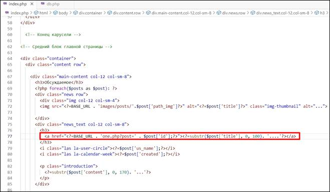
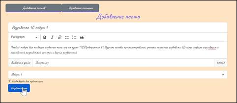

Задача урока: реализовать вывод постов на
главную страницу, получить информацию о постах, выполнить распределение постов
по категориям.
На занятии мы
узнаем:
1.
Как вывести посты на главную
страницу.
2.
Как вывести всю информацию
одного поста по его ссылке.
3.
Как выполнить распределение
постов по категориям, используя возможности языка запросов.
Вывод постов на
главную страницу
Для вывода постов на
главную страницу в нашем случае будет ограничение по символам для заголовка и
описания, чтобы сам пост не занимал много места, а верстка не была нарушена.
Нельзя забывать, что сами заголовки считаются ссылками на основную статью.
Откроем файл index.php и выведем через массив $posts все посты, которые уже опубликованы (у
которых уже имеется значение id_post 1) (рис. 16.1).

Рис. 16.1. Вывод всех публикаций через массив
Обновляем сайт по домену localhost и обновляем страницу (рис. 16.2).
Рис. 16.2. Сводка через массив по каждому из
постов
Для смены поста на
главной странице необходимо добавить метод foreach() в файле index.php
и заключить его между блоком поста на главной странице (рис. 16.3).
|
|
Цикл foreach() – при помощь его, мы можем перебрать все элементы массива
и выполнить для них (или только для некоторых из них) какие-либо действия.
Каждый такой цикл должен завершаться endforeach(). |
Рис. 16.3. Добавление метода foreach() для поста на главной странице
После этого
определим картинку поста через ссылку, которая будет браться из самой
публикации. Вместе с этим определим название поста через substr(), ограничиваясь 100 символами. Остальные символы будут обрезаться конкатенацией (рис.
16.4).
|
|
Функция
«substr()» - возвращает подстроку строки string, начинающейся со start символа по счету и длиной length символов. |
Рис. 16.4. Создание ссылки на картинку и
передача названия поста
Рис. 16.5. Итоговый вид главной страницы[ЛГ1]
Так как создателей
поста может быть множество, необходимо прописать код для передачи имени
создателя на главную страницу в постах. Удалим ранее прописанный printUser и перейдем в db.php.
Прописываем функцию вывода автора поста, прописав SQL-запрос (рис. 16.6).
Рис. 16.6. Добавление
функции вывода автора поста в db.php
Так как ALLselect()
изменен на ALLselectPostAuthorINDEX(),
в переменной $posts
файла index.php меняем первое значение на второе (рис. 16.7).
Рис. 16.7. Замена ALLselect() на
ALLselectPostAuthorINDEX()
Возвращаемся к блоку главной страницы в index.php
и прописываем через массив $post имя пользователя. Также меняем дату с фиксированной на плавающую,
которую определяли в прошлых занятиях (рис. 16.8).
Рис. 16.8. Создание массива имени
пользователя и даты публикации
То же самое делаем с «introduction», передавая через substr() описание поста, ограничиваясь 170 символами (рис. 16.9).
Рис. 16.9. Передача в «introduction» поля content
Так как необходимо принимать значение поста по id, нужно модифицировать поле передачи title (рис. 16.10).

Рис. 16.10. Получение id поста через one.php
Перейдем в файл one.php для подключения базы данных и определения $post (рис. 16.11).
Рис. 16.11. Подключение БД и определение id поста по переходной ссылке
Проверяем полученный результат, обновив наш сайт (рис. 16.12).
Рис. 16.12. Конечный вид постов после
передачи в них данных[ЛГ2]
Вывод одного поста из
базы данных
При нажатии на заголовок поста, находящегося
на главной странице, необходимо организовать переход к автору поста. Для этого
в базе данных надо вывести пост в one.php.
Для этого перейдем в файл db.php и добавим функцию вывода страницы автора. (Рис. 16.13)
Рис. 16.13 Функция
вывода автора поста на one.php страницу
Так как необходим вывод лишь одной страницы,
меняем функцию fetchAll() на featch().
Далее в файле one.php удаляем старую функцию $post и
заносим новую, которая получает значения «posts», «users» и конечный пост. (Рис. 16.14)
Рис.16.14 Получение
данных из таблиц на странице one.php
В среднем блоке главной страницы получаем
значение «title», а также подтягиваем картинку из поста по адресу. Если
картинка не подтянется, методом alt притянем «title».
По аналогии с прошлым уроком получаем имя
автора, дату поста и само описание. (Рис. 16.15)
Рис. 16.15. Редактирование
блока вывода поста
Подключим topics.php, так как необходимо выводить категории. Перед этим нужно
прописать error_reporting(0), так как будут проблемы с относительными и абсолютными
путями (Рис. 16.16)
Рис. 16.16. Привязка topics.php к странице поста
Разберем значение $topic на
ключ-значение и выведем его через функцию foreach()(Рис. 16.17).
Рис. 16.17. Принятие
значений по $topic
Обновляем страницу localhost и нажимаем на любой из постов главной страницы. (Рис. 16.18)
Рис. 16.18. Вывод
поста через главную страницу[ЛГ3]
Вывод постов по
категориям
Приступим к выводу постов по категориям. Для
этого перейдем в файл index.php и найдем ссылку на разделы $topic в
блоке боковой информации. Меняем значение one.php на наш будущий файл category.php и привязываем его к топику по id.
(Рис. 16.19)

Рис. 16.19. Редактирование
ссылки на category.php
Далее копируем файл index.php из socialsite и туда же вставляем, переименовав index copy.php в category.php. В этом же файле удаляем блок интервальной карусели и
добавляем новую переменную $category. Вместе с ней добавим $posts для получения id_topic:
|
$posts = ALLselect('posts', ['id_topic'] => $_GET['id']]); $category = Oneselect('categories', ['id'] => $_GET['id']]); |
Изменим средний блок главной страницы для
получения названий категорий в разделах. (Рис. 16.20)
Рис. 16.20.
Получение названий категорий в разделах
Переходим на главную
страницу localhost и
повторно проверяем создание постов на сайте. (Рис. 16.21-16.23)

Рис. 16.21.
Публикация нового поста
Рис. 16.22.
Отображение поста на главной странице[ЛГ4]
Рис. 16.23.
Отображение поста при нажатии на заголовок
Теперь разделы кликабельны и
ведут к постам, созданным когда-либо на сайте. Категории теперь переключаются и
выдают нужные разделы. (Рис. 16.24)
Рис. 16.24. Разделы с постами
На этом шестнадцатое занятие
окончено!
В рамках этого занятия мы опубликовали посты на
главной странице, сделали переход по ссылкам на каждый пост и отбор по
категориям постов.
На следующем занятии мы реализуем возможность общения пользователей под постами.
После прохождения каждого занятия рекомендуем повторить все термины,
которые были изучены, а также закрепить пройденный материал, ответив на
контрольные вопросы.
|
Это нужно запомнить |
|
|
|
Цикл foreach() – при помощь его, мы
можем перебрать все элементы массива и выполнить для них (или только для
некоторых из них) какие-либо действия. Каждый такой цикл должен завершаться endforeach(). Функция «substr()» - возвращает подстроку
строки string, начинающейся со start символа по счету и длиной
length символов. Функции
fetch() – с ее помощью можно отправлять сетевые запросы на сервер - как
получать, так и отправлять данные. Метод возвращает promise с объектом ответа, где находятся дополнительная информация (статус
ответа, заголовки) и ответ на запрос. Параметр «url» - адрес, по которому нужно сделать запрос. Параметр «options» (необязательный) – объект конфигурации, в котром можно настроить метод
запроса, тело запроса, заголовки и многое другое. |

Контрольные вопросы
1. Чем должен завершаться цикл foreach()?
2. Какая команда задаёт то, какие ошибки PHP
попадут в отчёт?
3. Что принимает массив в качестве параметров?
Домашняя работа
Самостоятельно доработать переключение между категориями на странице с одним постом (файл one.php).